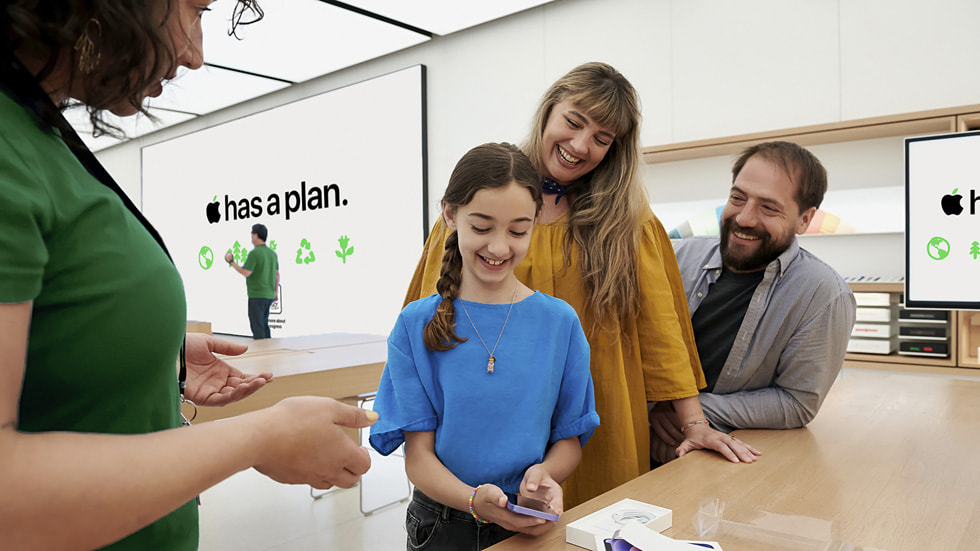
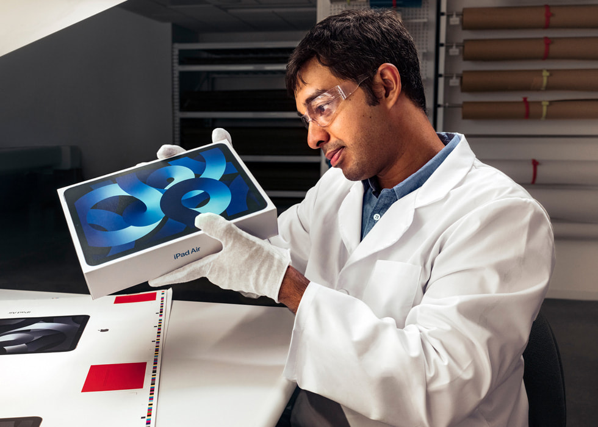

Apple Saket opened today in the heart of India’s thriving capital of New Delhi. The new retail location serves as a welcoming space where customers can shop Apple’s full lineup of products and services, receive exceptional support from team members, and learn how to get the most out of their devices by participating in free Today at Apple sessions.
Presented in a roundtable-style format for an even more personalised experience, Apple Saket’s Today at Apple sessions are designed for everyone from photographers and musicians to first-time Apple customers.
Read more... Ahead of Earth Day, Apple is announcing progress toward its ambitious goal to make every product carbon neutral by 2030, including a new framework for sharing the reduced climate impact of new models of iPhone, iPad, MacBook Air, and Apple Watch. The company is also announcing new partnerships for innovating climate solutions and engaging communities, and inviting customers to learn and take action with new curated collections and tailored activities across Apple platforms.
Already carbon neutral for its global corporate operations, Apple has decreased its comprehensive carbon footprint by over 45 percent since 2015, even as the company’s revenue has grown by over 68 percent during that same period. In total last year, the company’s extensive environmental efforts — including expanding renewable energy across its global supply chain, and building products with recycled and other low-carbon materials — avoided more than 28 million metric tons of carbon.
Read more... Apple announced a major acceleration of its work to expand recycled materials across its products, including a new 2025 target to use 100 percent recycled cobalt1 in all Apple-designed batteries. Additionally, by 2025, magnets in Apple devices will use entirely recycled rare earth elements, and all Apple-designed printed circuit boards will use 100 percent recycled tin soldering and 100 percent recycled gold plating.
In 2022, the company significantly expanded its use of key recycled metals, and now sources over two-thirds of all aluminium, nearly three-quarters of all rare earths, and more than 95 percent of all tungsten in Apple products from 100 percent recycled material. This rapid progress brings Apple closer to its aim to one day make all products with only recycled and renewable materials, and advances the company’s 2030 goal to make every product carbon neutral.
Read more...